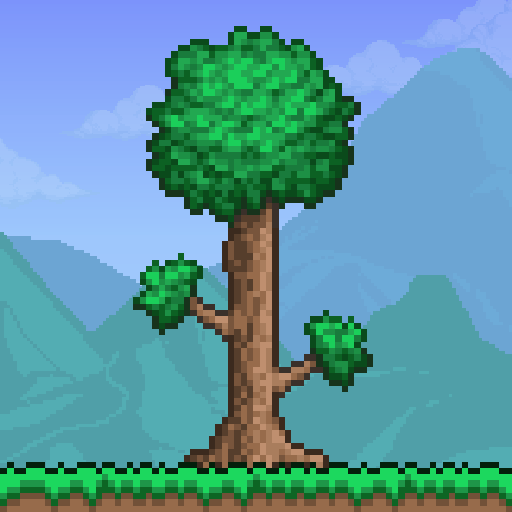

All about Pixel Art |

|
History
Pixel art originates from the classic arcade games of the 1980s. Early arcade games like Space Invades, Pac-Man and Donkey Kong had very low graphics, as each pixel had to be coded in seperately. Video game developers were mainly programs, and between this and limitations of computers at the time, these games weren't particularly artistic. However, with the growing popularity of video games at the time, this aesthetic gained great public appreciation. Since then, this style of art has continued to be utilised in both more modern video games and a broader range of artworks.
Modern Pixel Art Games
TerrariaReleased in 2011 and continuing in popularity since (44 million copies sold by 2022), Terraria is a 2D Action-Adventure Sandbox game developed by Re-Logic. The game is based around exploring, mining, and fighting enemies. The main aim is to defeat bosses to advance through the game and improve your weapons, armour, and tools. The game is packed to the brim with content and storyline, so there is always something to do in it. |
 |
UndertaleA 2015 2D role-playing game created by indie developer Toby Fox, this game is well known for its interesting electronic soundtrack. The game follows the journey of a child who has fallen into the Underground: a large, secluded region under earth's surface. To progress through the game one must defeat monsters, opting to either spare them or kill them. The players choices affect the game and the story line, creating different outcomes. The game has quite simple pixel art, much of it being monotone, but having its own charming aesthetic. |
|
FEZA puzzle platform game developed by Polytron Corporation and released in 2012 by Trapdoor, FEZ revolves around a character, Gomez, who lives in a 2D world, but gains the power to see the world's third dimension and must go off on an adventure to fix the "Hexahedron" and stabilise his world. This split between 2D and 3D is what makes this game so unique. It is presented on a 2D view which the player can rotate to view from other angles, which can reveal hidden doors, treasures and other secrets. This creates an interesting partial-3D form of pixel art, giving it a refreshing level of depth. |

|